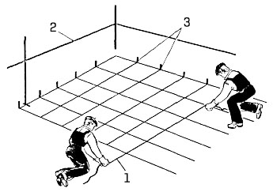
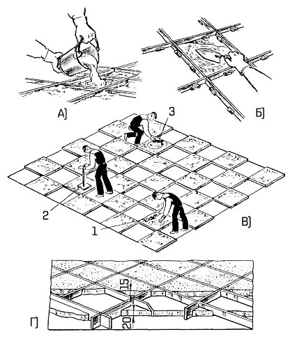

-

8(0152)31-25-61
-

kst@ggkst.by
-

http://ggkst.by
8(0152)31-25-61
kst@ggkst.by
http://ggkst.by
Карта 7: Набивка многоцветного мозаичного покрытия с прокладкой разделительных жилок
Состав технологических операций. Разметка рисунка мозаичного покрытия; устройство маяков; прокладка разделительных жилок с рихтованием; набивка,
выравнивание и уплотнение мозаичного раствора.
Механизмы, инструменты, приспособления, инвентарь. Пылесос; нарезчик швов МБ-26 или отрезовка. Ножницы для резки металла; деревянная или резиновая
киянка; роликовый стеклорез; волосяная щетка; лейка; ведра; рейка Болотина; разметочный шнур или рулетка; складной метр; деревянный угольник; плиточная лопатка;
правило и уровень; трамбовка или каток.
Материалы. Мозаичный раствор подвижностью 2…3 см заданного состава и прочности (марка); жилки металлические или стеклянные толщиной 0,8...2 мм;
гвозди диаметром 4…5 мм для анкеровки металлических жилок; цветные мелки.
Схема организации рабочего места (рис. 1). Помещения, где устраивают мозаичные покрытия, должны быть очищены от мусора, основания обработаны электрощеткой для
придания им шероховатости и обеспылены, уровень пола закреплен на стенах помещения.
Рис. 1. Организация рабочего места при устройстве многоцветного мозаичного покрытия с разделительными жилками: 1 - штабеля разделительных жилок, 2 - разметочные оси, 3 - ящик с рабочим инструментом, 4 - контрольная рейка, 5 - тележка с раствором, 6 - ведра
Рис. 2. Разметка рисунка мозаичного покрытия: 1 - причальный шнур, 2 - линия на высоте 1 м над уровнем чистого пола, 3 - риски
Последовательность выполнения технологических операций. Разметка рисунка мозаичного покрытия. После проверки конфигурации покрытия переносят
контуры рисунка на основание и закрепляют его мелом или причальным шнуром 1 (рис. 2). При этом рулетку или измерительный шнур нужно удерживать в натянутом
положении.
Если конфигурация основания имеет неправильную форму, то определяют место положения двух взаимно перпендикулярных осей основания и от них вправо и влево ведут
разметку покрытия.
По периметру помещения рисками 3 фиксируют шаг между рядами устанавливаемых жилок.
Устройство маяков. В соответствии с уровнем пола в данном помещении по периметру стен наносят линию 2, находящуюся на 1 м выше покрытия. Затем ставят реперный
маяк (рис. 3, а) на 1…1.5 мм выше уровня покрытия. С помощью уровня и рейки устанавливают фризовые и промежуточные маяки. В качестве временных маяков могут быть
керамические плитки, уложенные на слой раствора.
Рис. 3. Последовательность установки разделительных линий: а - установка реперного маяка, б - выверка установленных жилок, в - прорезка бороздок, г - организация работ; 1 - реперный маяк, 2 - разделительные жилки, 3 - контрольная рейка; 4 - уровень, 5 - растворные марки, 6 - П-образный хомутик, 7 - отверстие для анкерного гвоздя, 8 - бороздка, 9 - отрезовка
Установка разделительных жилок. По контуру рисунка, определяющего местоположение жилок на поверхности прослойки и закрепленного мелом или причальными шнурами, вставляют жилки. Если раствор прослойки не набрал окончательной прочности, отрезовкой 9 прорезают бороздки 8, в которые вставляют жилки. При затвердевшей прослойке жилки устанавливают в бороздки, сделанные нарезчиком швов, или на растворные марки 5 и временно закрепляют П-образным хомутиком 6. В нижней части жилок (длиной 1,5 м) имеются отверстия 7 для гвоздей, выполняющих роль анкеров. Перед установкой металлические жилки при необходимости выправляют молотком-киянкой.
Рис. 4. Последовательность набивки мозаичного раствора: а - заполнение квадратов раствором, б - разравнивание раствора, в - организация робот, г - готовое покрытие; 1 - заглаживание раствора лопаткой, 2 - уплотнение раствора трамбовкой, 3 - заглаживание поверхности гладилкой
Устанавливают разделительные жилки по уровню 4 с рейкой 3, которую опирают на реперный маяк. Высота жилок должна на 1…1,5 мм превышать толщину лицевого слоя.
Уровень верхней кромки выверяют по уровню. Выверенные по высоте жилки закрепляют растворными марками, осаживая или добавляя раствор.
Жилки образуют жесткий каркас для мозаичного раствора. В местах примыкания пола к стенам, колоннам укладывают жилки, предотвращающие деформацию покрытия при
осадке стен, перегородок.
Последовательность набивки и уплотнения мозаичного раствора. До укладки мозаичного раствора поверхность прослойки в каждой ячейке-квадрате,
ограниченной жилками, грунтуют цементным молоком.
Мозаичный раствор укладывают в ячейку, образованную жилками (рис. 4, а). Затем раствор разравнивают лопаткой (рис. 4, б) и уплотняют металлической трамбовкой
2 (рис. 4, в) до появления на поверхности цементного молока. Перед схватыванием раствора цементное молоко удаляют кистыо-макловицей.
После этого поверхность заглаживают круговыми движениями с помощью стальных гладилок 3. Таким образом, ячейки, ограниченные жилками, будут заполнены мозаичным
раствором (рис. 4, г).
Контроль качества. Мозаичные покрытия с разделительными жилками должны иметь горизонтальную ровную поверхность с равномерным распределением
каменной крошки и соответствовать рисунку и цвету, установленным проектом. Отклонение от уровня чистого пола разделительных жилок не должно превышать 1 мм на
1 м длины. При отклонении свыше 3 мм дефекты исправляют до укладки мозаичной массы.
Крупность зерен каменной крошки не должна превышать 15 мм и 0,6 толщины мозаичного покрытия.
Трудовые затраты (табл. 1).
Таблица 1.
Нормы времени, чел-ч, на устройство 1 м2 многоцветного мозаичного покрытия (без учета устройства прослойки) и на установку 1 м разделительных жилок
(в числителе) и нормы выработки соответственно, м2 и м, на 1 чел-дн (в знаменателе)
| Вид покрытия | Нормы на | ||
| Устройство покрытия пола | Установка жилок | ||
| стеклянных | латунных | ||
| С прямолинейным рисунком жилками длиной до 3 м на 1м2 пола или с рисунком в шашку | 0,8/10 | 0,12/66 | 0,16/50 |
| С прямолинейным рисунком жилками длиной более 3 м на 1м2 пола или с криволинейным рисунком | 1,0/8 | 0,22/36,3 | 0,23/35 |
Техника безопасности. При заготовке жилок отходы стекла или металла нужно собирать в специальный ящик для отходов. Набивают мозаичный раствор в
ячейки многоцветного мозаичного покрытия во влагонепроницаемых наколенниках и резиновых перчатках.
Контрольные вопросы. В какой последовательности выполняют набивку многоцветного мозаичного покрытия?
Какие материалы используют для разделительных жилок? Почему уплотнение мозаичного раствора в ячейке с разделительными жилками выполняют трамбовкой,
а не вибратором? Как размечают местоположение разделительных жилок? Какие правила техники безопасности необходимо соблюдать при изготовлении стеклянных жилок?
Карта 8 — Обдирка мозаичного покрытия пола